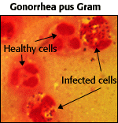

Sexually Transmitted Diseases Problem Set
Problem 3: May Also Cause Fertility Problems
Help to answer the question| In addition to chlamydia, which of the following STDs may also cause fertility problems? |
Tutorial
Pelvic inflammatory disease (PID)|
 Used with permission of © Dr. G. Songer |
In women, gonorrhea, caused by the bacterium Neisseria gonorrhea, and chlamydia are major causes of pelvic inflammatory disease (PID). PID can cause chronic pelvic pain, ectopic pregnancy, and fertility problems. |
| Gonorrhea is transmitted through any sexual contacts in which body fluids are exchanged. Gonorrhea also facilitates transmission of the HIV virus. Condoms, used consistently and correctly, are effective in preventing transmission of both diseases. |
|
Gonorrhea is asymptomatic in 85% of the women and in 5% of the men. When present in women, the symptoms of gonorrhea are a thick white or yellow discharge from the vagina, a burning sensation when urinating or having a bowel movement, abnormal menstruations, and pelvic pain.
In infected men, the symptoms of gonorrhea may be a thick, yellow discharge from the penis and pain when urinating or having a bowel movement. |
| The incidence of gonorrhea infection in the United States in 1994 was estimated to be 800,000. Gonorrhea infections in the U.S. are becoming increasingly resistant to antibiotic treatment. As of 1976, all gonorrhea infections were curable by penicillin. By 1994, approximately 30% of gonorrhea isolates were resistant to penicillin, tetracycline, or both. Resistance to newer quinoline antibiotics has been reported in several parts of the world, including the U.S. |


University of Arizona
Wednesday, September 30,1998
Contact the Development Team
http://www.biology.arizona.edu
All contents copyright © 1998. All rights reserved.